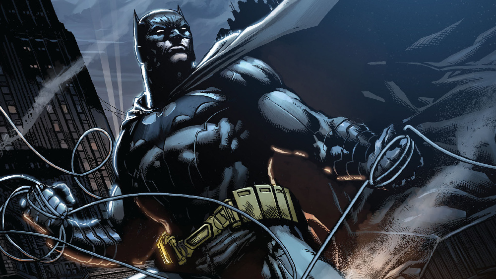
【长篇书单】来自REDDIT的蝙蝠侠补漫指南（上）
一位reddit网友Cranyx发帖总结了他个人对于各年代蝙蝠侠系列刊物的阅读指南，虽然具有一定的个人倾向，但是对于新人入坑或者粉丝进阶都有一定的帮助。
本书单从八十年代末开始，没有太过久远的古早漫画，降低了补漫难度，同时更符合现行连续性。
同时这份清单最大的特点在于少了很多经常被提及的故事，例如初次登场、《缄默》、《战争游戏》等，而发掘了一些常规连载中的精彩桥段，提供了全新的视角。
早期
蝙蝠侠早年的大部分时间围绕着他学习如何成为黑暗骑士，与吉姆·戈登等盟友建立信任，并招募蝙蝠家族的第一批成员。从历史上看，这些故事发生在黄金时代和白银时代早期，但至今仍有许多作者在不断重新致敬这个时代。
·侦探漫画年刊 #2（1989）
这个故事主要是一个回忆，当时年轻的布鲁斯还在学习如何成为一名侦探。他必须调查一个南部小镇的系列杀人事件。
·蝙蝠侠：元年
讲述了布鲁斯·韦恩作为蝙蝠侠和吉姆·戈登警长的“起源故事”，他是GCPD中唯一的新警察。被许多人认为是有史以来最伟大的蝙蝠侠故事之一。
·蝙蝠侠：萨满
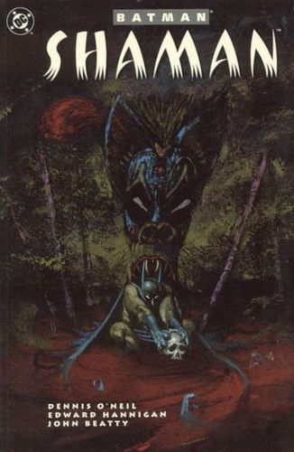
萨满与元年同时发生，布鲁斯的训练带他进入了阿拉斯加荒野，在那里他遇到了一个萨满，学会了面具的意义。他还必须调查一系列仪式性谋杀案，以及它哥谭市毒品交易的关联。
·蝙蝠侠与怪物军团
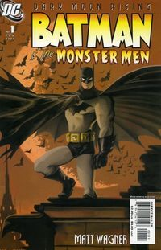
这是布鲁斯与蝙蝠侠最早的反派之一：雨果·斯特兰奇教授的初次交手的现代版重写。也引入了朱莉·麦迪逊，布鲁斯·韦恩的第一任恋人。
·蝙蝠侠与疯狂僧侣
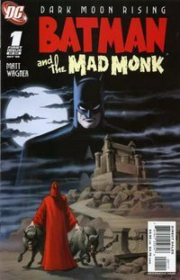Batman and the Mad Monk 1
《蝙蝠侠与 怪物军团》的续集，以1939年的故事《蝙蝠侠与吸血鬼》为基础，发生在侦探漫画＃31-32中。这个故事还进一步深入发展了布鲁斯韦恩和猫女之间的关系。
·蝙蝠侠：狂笑之人
蝙蝠侠与小丑第一次见面。基于1940年的蝙蝠侠＃1改编 。
·蝙蝠侠：猎物
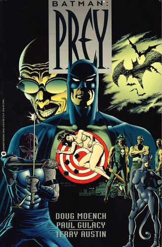
来自《蝙蝠侠：黑暗骑士传奇》#11-15，讲述了另一个蝙蝠侠与雨果·斯特兰奇的早期冲突，以及斯特兰奇的表面死亡。
·蝙蝠侠：哥特
一个真正的侦探故事，带有神秘的宗教和魔法。
·蝙蝠侠：刀刃
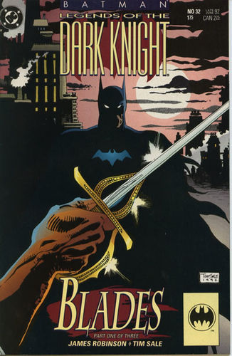
来自《蝙蝠侠：黑暗骑士传奇》#32-34，一个可疑的新义警来到了哥谭，并声称他可以做得比蝙蝠侠做得更好。
·蝙蝠侠：温室
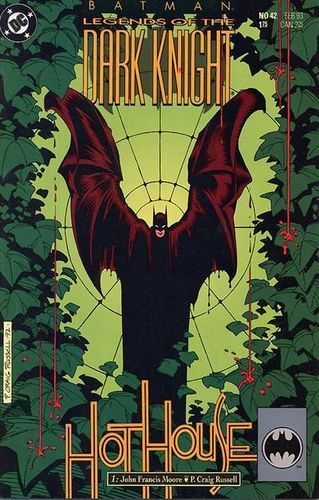
《蝙蝠侠：黑暗骑士传奇》#42-43，一名男子在可疑的情况下自杀，蝙蝠侠怀疑事关毒藤女，但毒藤坚称她是无辜的。
·蝙蝠侠：漫长的万圣节
Jeph Loeb和Tim Sale的史诗侦探故事，讲述了假日杀手和哈维·丹特走向堕落的故事。
·蝙蝠侠：黑暗胜利
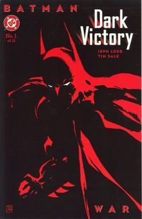Batman Dark Victory 1
《漫长的万圣节》的续集，延续了许多故事情节。这个故事同时也详细介绍了初代罗宾迪克·格雷森。
·罗宾/蝙蝠女郎：元年
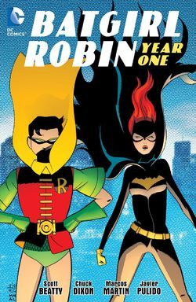
这两个故事被合订成了一本书出版。前者讲述了迪克的第一次冒险以及他与双面人的对抗。后者讲述了芭芭拉·戈登如何参与打击犯罪，并加入了活力双雄。
·蝙蝠侠：夜的呐喊
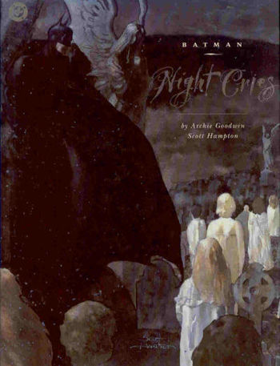
一个非常黑暗的侦探故事，很大程度上聚焦于戈登局长，他试图追查一系列与虐待儿童有关的谋杀案，同时处理他自己陷入困境的家庭生活。
青铜时代
70年代，蝙蝠侠在整个白银时代经历漫画法律的束缚后终于又回归了他的黑暗根源。正是在这段时期，他被定义为我们今天所熟悉的角色。
·侦探漫画#395 “无主之墓的秘密”
第一个由Denny O'Neil和Neal Adams创作的蝙蝠侠故事，蝙蝠侠必须调查一对神秘的夫妇，而他们似乎不惜一切代价保守着秘密。
·侦探漫画＃400，＃402，＃407，＃416，＃429 “人蝠传奇”
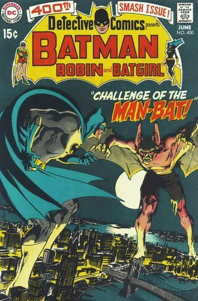Cover
由Frank Robbins创作，对于柯克·朗斯托姆，即人蝠的介绍。
·侦探漫画＃410 “来自坟墓的誓言”
蝙蝠侠追踪一名曾经是马戏演员的罪犯，来到了他的藏身之处，并得到了比他预期之中更多的冲突。
·蝙蝠侠＃237 “死神之夜”
打扮成死神的人在为万圣节前夜大肆屠杀
·侦探漫画＃411，蝙蝠侠＃232，＃235，＃240，＃242，＃243，＃244，DC特别系列＃15 “恶魔传奇”
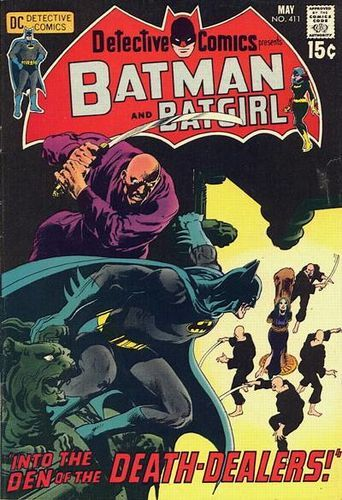Cover
讲述了蝙蝠侠与拉斯·阿尔·古尔之间的会面和最初的斗争。
·蝙蝠侠＃250 “不为人知的蝙蝠侠”
 Cover
Cover
有三个男孩和布鲁斯·韦恩一起露营，每个人都讲述了他们对于蝙蝠侠的看法。
·蝙蝠侠＃251 “小丑的五路复仇”
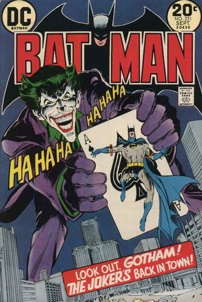Cover
这个故事标志着自黄金时代以来，小丑第一次回归他的杀戮的本性。
·侦探漫画＃439 “追猎者之夜”
一个蝙蝠侠追捕一群犯罪团伙的故事，全程基本没有对话。
·侦探漫画＃444-448 “蝙蝠凶手”
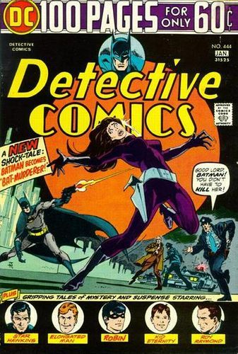Cover
蝙蝠侠必须去调查塔莉亚谋杀案，而主要嫌疑人就是他自己！
·侦探漫画＃457 “犯罪巷中没有希望”
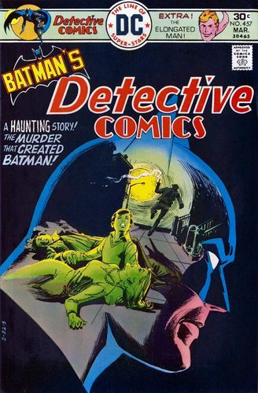Cover
探究了蝙蝠侠造访犯罪巷时的心理。
·侦探漫画＃469-479 “斯特兰奇魅影”
雨果·斯特兰奇归来！在离开漫画近40年之后，斯特兰奇计划对黑暗骑士施以最终报复。
·DC特别系列#15 “午夜与三点的致命打击”
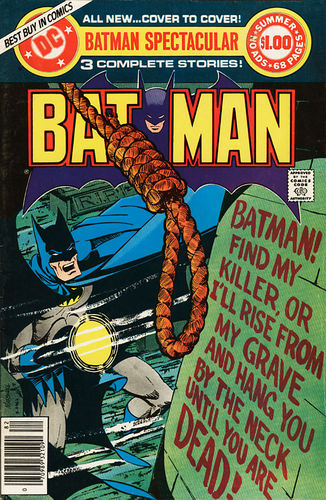ç
第一个也是唯一一个带插图的蝙蝠侠散文故事。
·蝙蝠侠＃321 “可怕的生日，亲爱的小丑......！”
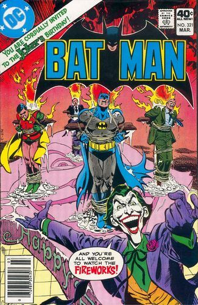Cover
小丑正在举办他的生日派对，并且他在策划一声巨响！
·侦探漫画＃500 “抹杀传奇”
蝙蝠侠有机会阻止他的父母被乔·切尔枪杀
·侦探漫画＃514 “避风港”
当蝙蝠侠追捕马克西·宙斯而进入旷野时，他遭遇了一个意想不到的盟友
蝙蝠家族的剧变
80年代是DC漫画的一个重大变革时期。随着无限地球的危机的结束，许多角色离开了各自的岗位，并且引入了许多新角色。蝙蝠家族也是如此。
·夜翼：元年
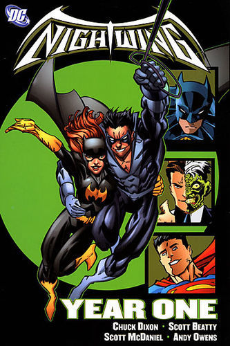
《夜翼》#101-106，迪克·格雷森终于准备好单飞，在蝙蝠侠的阴影之外为自己扬名。当然随着迪克的离去，又出现了一个新的罗宾。
·侦探漫画 #569-574
这一阶段的故事是白银时代与80年代的完美结合。其中可以看到杰森作为罗宾的生涯的早期，甚至还有与夏洛克福尔摩斯的联动。
·蝙蝠侠年刊＃11 “致命粘土”
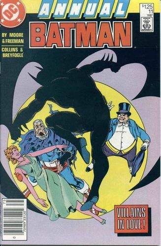Cover
泥面人的爱情故事
·蝙蝠侠：邪教
杰森·托德担任罗宾时期的少数著名漫画之一，蝙蝠侠被迫吸毒并被拉入一个决定接管哥谭市的地下邪教组织。
·蝙蝠侠：致命玩笑
有史以来最著名的漫画之一，小丑带来了芭芭拉·戈登，前蝙蝠女郎的残废。
·蝙蝠侠＃424 “外交官的儿子”
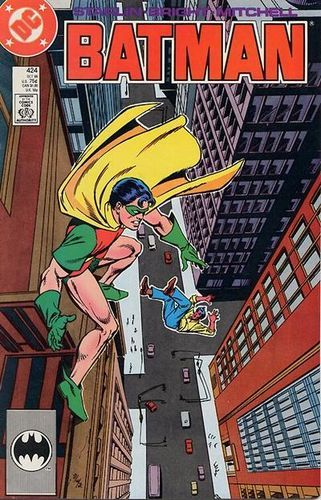Cover
我们第一次看到了杰森的黑暗面
·家人之死
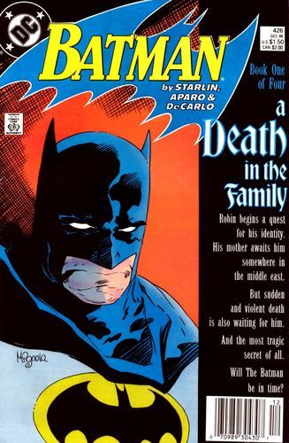
杰森·托德被小丑谋杀的悲惨故事
·阿克汉姆疯人院：严肃地球上的严肃的屋宅
这个奇怪的故事如梦似幻（更恰当点说是噩梦），蝙蝠侠深入研究了阿克汉姆疯人院的核心。
·蝙蝠侠/女猎手：泣血
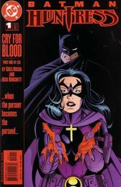
这个故事展示了蝙蝠侠和女猎手之间的紧张关系，并揭示了她的起源。
·秘密起源＃36 “孔雀舞”
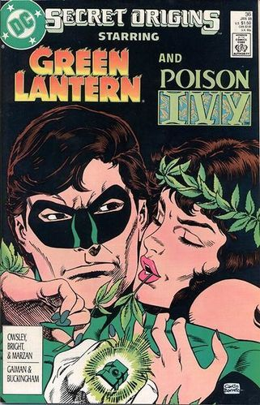Cover
毒藤女的起源故事
·秘密起源特刊＃1
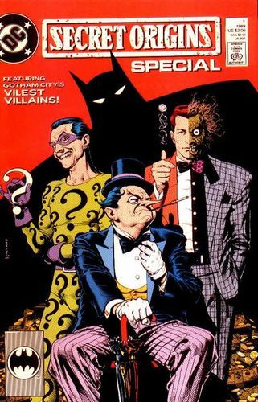Cover
谜语人的起源故事
·蝙蝠侠：盲目的正义（BLIND JUSTICE）
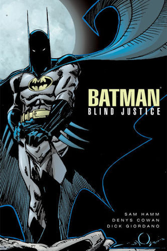
为了纪念蝙蝠侠诞生50周年写下的故事，探讨了布鲁斯·韦恩和他的另一个自我之间的关系。
·孤独的死亡之地（A Lonely Place of Dying）
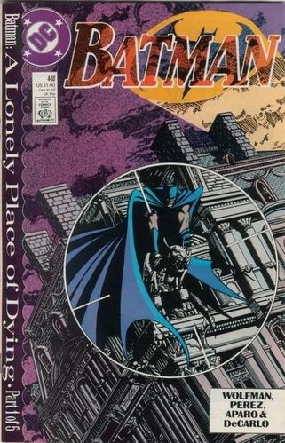
随着罗宾死去，蝙蝠侠变得心烦意乱，鲁莽。蒂姆·德雷克试图帮助他，并最终在悲剧后继承杰森的衣钵。
·蝙蝠侠：黑暗骑士，黑暗之城（Dark Knight, Dark City）
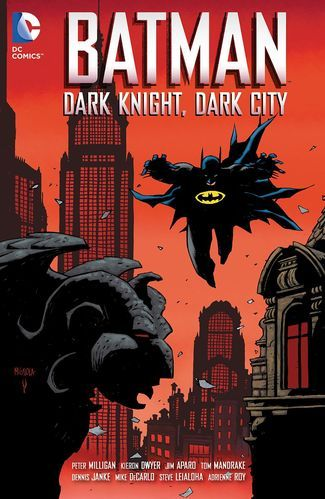
谜语人疯了吗？当一群神秘学家试图召唤恶魔巴巴托斯时，谜语人突然采取了更加黑暗的手段，诉诸酷刑和谋杀。这里的许多创意之后在莫里森的蝙蝠史诗中得到了深入探讨。
·侦探漫画＃583-594，601-621,627，蝙蝠侠＃455-466,470-476，蝙蝠之影＃1-5
艾伦·格兰特和布雷福格尔的著名连载，其中包括众多首次出现的角色，如腹语师、扎斯与捕鼠人
·侦探漫画＃629,631-633,638,643
彼得·米利根参与的故事，这一系列故事令人难以忘怀，并经常挑战对与错的概念。
·哥谭之夜
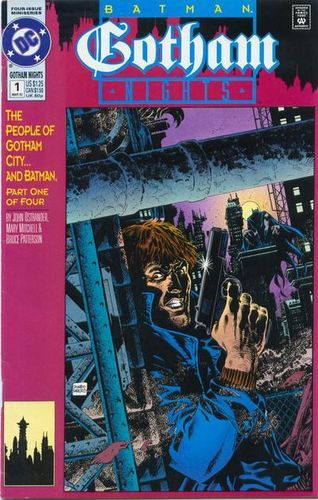Cover
了解哥谭市的日常生活。
·侦探漫画＃651 “布洛克的子弹”
布洛克警探认为有人试图谋杀他，不得不向蝙蝠侠寻求帮助。
·蝙蝠侠：骑士陨落 Vol1
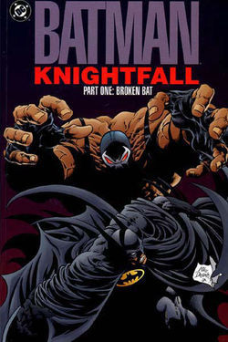
贝恩来到哥谭，并打断了蝙蝠侠的后背，复仇天使继承了披风并开始守护哥谭。
·蝙蝠侠：骑士陨落 Vol3
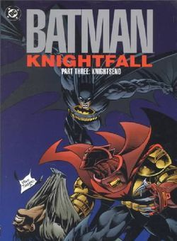
复仇天使走火入魔，用强权统治着哥谭。布鲁斯·韦恩必须从受伤中恢复并收回披风。此处还包括迪克·格雷森第一次成为蝙蝠侠。
·夜翼 ＃25“男孩们”
这是一个感人的单期故事，我们可以看迪克·格雷森与蒂姆·德雷克之间良好的关系。
·猛禽小队 ＃8“飞翼之上”
探讨迪克·格雷森与芭芭拉·戈登之间关系的一个单期故事。
下期内容：新哥谭、莫里森史诗与新52
原贴地址：【https://www.reddit.com/r/DCcomics/comments/9as5ua/the_chronological_and_comprehensive_batman/】
![[跪了]](2018new_gui_org.png "[跪了]")
![[允悲]](2018new_kuxiao_org.png "[允悲]") 咋办，蝙蝠侠传奇我倒是有实体书能补下，其他的好想看啊
咋办，蝙蝠侠传奇我倒是有实体书能补下，其他的好想看啊
小东很忙201008：不知道之后会不会有绿灯军团的漫画刊推荐
![[并不简单]](2018new_bingbujiandan_org.png "[并不简单]")
为了避免骚扰，微博智能反垃圾系统会过滤掉部分广告用户。